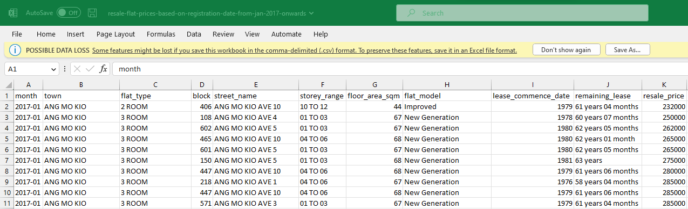

pacman::p_load(tidyverse, lubridate)
rawData <- read_csv("resale-flat-prices-based-on-registration-date-from-jan-2017-onwards.csv")Take-Home Exercise 3
The following is my submission for Take-Home Exercise 3.
1. Task
In this take-home exercise, we are required to uncover the salient patterns of the resale prices of public housing property by residential towns and estates in Singapore by using appropriate analytical visualization techniques learned in Lesson 4: Fundamentals of Visual Analytics. We are encouraged to apply appropriate interactive techniques to enhance user and data discovery experiences.
For the purpose of this study, the focus would be on 3-ROOM, 4-ROOM and 5-ROOM types. We can choose to focus on either one housing type or multiple housing types. In my case, I will be focusing on multiple housing types for the year 2022.
2. Dataset
2.1 Data Source
The dataset used in this take-home exercise was downloaded from the following link: https://data.gov.sg/dataset/resale-flat-prices
We are using the Resale flat prices based on registration date from Jan-2017 onwards csv file for this exercise.

2.2 Data Preparation
First, let’s load the dataset and the libraries that we will be using:
Let’s take a look at this dataset:
head(rawData)# A tibble: 6 × 11
month town flat_…¹ block stree…² store…³ floor…⁴ flat_…⁵ lease…⁶ remai…⁷
<chr> <chr> <chr> <chr> <chr> <chr> <dbl> <chr> <dbl> <chr>
1 2017-01 ANG MO … 2 ROOM 406 ANG MO… 10 TO … 44 Improv… 1979 61 yea…
2 2017-01 ANG MO … 3 ROOM 108 ANG MO… 01 TO … 67 New Ge… 1978 60 yea…
3 2017-01 ANG MO … 3 ROOM 602 ANG MO… 01 TO … 67 New Ge… 1980 62 yea…
4 2017-01 ANG MO … 3 ROOM 465 ANG MO… 04 TO … 68 New Ge… 1980 62 yea…
5 2017-01 ANG MO … 3 ROOM 601 ANG MO… 01 TO … 67 New Ge… 1980 62 yea…
6 2017-01 ANG MO … 3 ROOM 150 ANG MO… 01 TO … 68 New Ge… 1981 63 yea…
# … with 1 more variable: resale_price <dbl>, and abbreviated variable names
# ¹flat_type, ²street_name, ³storey_range, ⁴floor_area_sqm, ⁵flat_model,
# ⁶lease_commence_date, ⁷remaining_leasesummary(rawData) month town flat_type block
Length:146872 Length:146872 Length:146872 Length:146872
Class :character Class :character Class :character Class :character
Mode :character Mode :character Mode :character Mode :character
street_name storey_range floor_area_sqm flat_model
Length:146872 Length:146872 Min. : 31.0 Length:146872
Class :character Class :character 1st Qu.: 82.0 Class :character
Mode :character Mode :character Median : 94.0 Mode :character
Mean : 97.6
3rd Qu.:113.0
Max. :249.0
lease_commence_date remaining_lease resale_price
Min. :1966 Length:146872 Min. : 140000
1st Qu.:1985 Class :character 1st Qu.: 358000
Median :1996 Mode :character Median : 448000
Mean :1996 Mean : 478316
3rd Qu.:2007 3rd Qu.: 565800
Max. :2019 Max. :1418000 As you can see, the month column is in the format of YYYY-MM. Using the month column, we can actually create three new columns - Month, Quarter and Year, which would be useful when building visualizations.
data <- rawData %>%
mutate(Month = month(ym(month))) %>%
mutate(Quarter = quarter(ym(month))) %>%
mutate(Year = year(ym(month)))
summary(data) month town flat_type block
Length:146872 Length:146872 Length:146872 Length:146872
Class :character Class :character Class :character Class :character
Mode :character Mode :character Mode :character Mode :character
street_name storey_range floor_area_sqm flat_model
Length:146872 Length:146872 Min. : 31.0 Length:146872
Class :character Class :character 1st Qu.: 82.0 Class :character
Mode :character Mode :character Median : 94.0 Mode :character
Mean : 97.6
3rd Qu.:113.0
Max. :249.0
lease_commence_date remaining_lease resale_price Month
Min. :1966 Length:146872 Min. : 140000 Min. : 1.000
1st Qu.:1985 Class :character 1st Qu.: 358000 1st Qu.: 4.000
Median :1996 Mode :character Median : 448000 Median : 7.000
Mean :1996 Mean : 478316 Mean : 6.632
3rd Qu.:2007 3rd Qu.: 565800 3rd Qu.:10.000
Max. :2019 Max. :1418000 Max. :12.000
Quarter Year
Min. :1.000 Min. :2017
1st Qu.:2.000 1st Qu.:2018
Median :3.000 Median :2020
Mean :2.546 Mean :2020
3rd Qu.:4.000 3rd Qu.:2021
Max. :4.000 Max. :2023 Since we will only be focusing on the year 2022, we will filter the dataset to only keep records for the year 2022. Also, we only want to work with records which have a flat type of 3-Room, 4-Room or 5-Room. Let’s filter the data to meet this condition.
resaleFlats <- data %>%
filter(Year == "2022") %>%
filter(flat_type %in% c("3 ROOM", "4 ROOM", "5 ROOM"))
head(resaleFlats)# A tibble: 6 × 14
month town flat_…¹ block stree…² store…³ floor…⁴ flat_…⁵ lease…⁶ remai…⁷
<chr> <chr> <chr> <chr> <chr> <chr> <dbl> <chr> <dbl> <chr>
1 2022-01 ANG MO … 3 ROOM 320 ANG MO… 07 TO … 73 New Ge… 1977 54 yea…
2 2022-01 ANG MO … 3 ROOM 225 ANG MO… 07 TO … 67 New Ge… 1978 55 yea…
3 2022-01 ANG MO … 3 ROOM 331 ANG MO… 07 TO … 68 New Ge… 1981 58 yea…
4 2022-01 ANG MO … 3 ROOM 534 ANG MO… 07 TO … 82 New Ge… 1980 57 yea…
5 2022-01 ANG MO … 3 ROOM 578 ANG MO… 04 TO … 67 New Ge… 1980 57 yea…
6 2022-01 ANG MO … 3 ROOM 452 ANG MO… 01 TO … 83 New Ge… 1979 56 yea…
# … with 4 more variables: resale_price <dbl>, Month <dbl>, Quarter <int>,
# Year <dbl>, and abbreviated variable names ¹flat_type, ²street_name,
# ³storey_range, ⁴floor_area_sqm, ⁵flat_model, ⁶lease_commence_date,
# ⁷remaining_leaseThe data is now ready for exploration and visualization.
2.3 Data Exploration
This concludes the work submitted for Take-Home Exercise 3. Thank you!